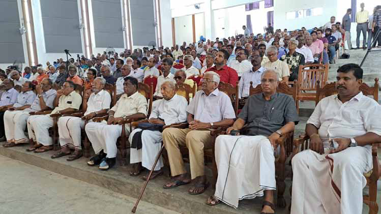
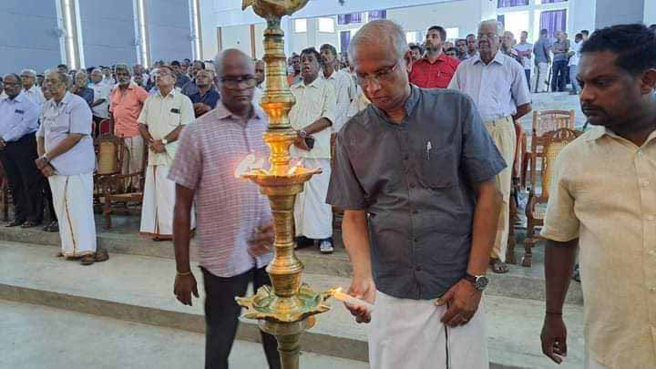
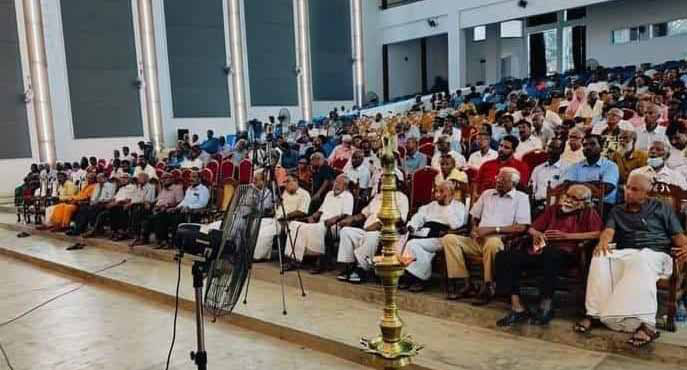

Common Tamil candidate is a useless poisonous experiment:
Common Tamil candidate is a useless poisonous experiment:
Jaffna Monitor hellojaffnamonitor@gmail.com 12 "W e must campaign among the people against the common Tamil candidate for the presidential election. This matter is a farcical play, a useless poisonous experiment," declared M.A. Sumanthiran, Member of Parliament from the Tamil National Alliance and a leading figure in Ilankai Tamil Arasu Kachchi (ITAK). He made these remarks at a recently held event in Jaffna titled "The Tamil People's Self-Determination Rights and Public Referendum." This political forum, organized by Sumanthiran, aimed to gather various opinions on the Tamil community's stance in the presidential election and, on the sly, to gently nudge aside those advocating for a common Tamil candidate. M.A. Sumanthiran By: Our Reporter Common Tamil candidate is a useless poisonous experiment: Jaffna

Jaffna Monitor hellojaffnamonitor@gmail.com 13 I invited those advocating for a common Tamil candidate to a meeting to discuss the prospects of such a candidate for the presidential election," explained M.A. Sumanthiran. "They initially committed to attend. However, when approached later, they informed me that they are a 'group' and their group had collectively decided to abstain from participating, thus withdrawing their earlier commitment. I still have this message saved on my phone," he noted. He also mentioned that the group promoting the common Tamil candidate included a so-called political writer. "When I invited the writer to attend the meeting and share his opinions, he replied that he was part of a group that had decided not to participate, and therefore, he could not attend," Sumanthiran said. Sumanthiran pondered the reasons behind the refusal of some to attend the meeting, suspecting that their motivations might stem from a reluctance to tolerate differing opinions, which he likened to a form of fascism. He stated, "It is a fundamental democratic principle to present various opinions to the public. Opinions should engage and challenge each other. To suppress the expression of opinions is tantamount to fascism. When we seek to discuss and share such vital issues with the public, it is perplexing why those who opt out would effectively align themselves with such undemocratic principles." This was his reflection on the matter. In his address, Sumanthiran articulated a firm and reasoned opposition to the proposal of a common Tamil candidate, characterizing it as detrimental and ill-conceived. He emphasized that the community's united stance should not be interpreted as desperation but as a reaffirmation of their deeply held values. He highlighted why the proposal for a common Tamil candidate does not align with the principles of a standard referendum or collective electoral decision, as claimed by the so-called supporters of the common Tamil candidate. He noted that a presidential election is fundamentally different. According to

Jaffna Monitor hellojaffnamonitor@gmail.com 14 Sumanthiran, in the forthcoming presidential election, voters are expected to support a candidate they genuinely believe is suited to lead the nation rather than backing what he views as an alternative political maneuver. Therefore, he considers the proposal of a common Tamil candidate not only unnecessary but also counterproductive, risking the integrity and autonomy of the Sri Lankan Tamil community. He argues that endorsing this initiative would renounce their sovereignty and right to self-determination— rights as essential as life itself. Sumanthiran's stance suggests supporting such a candidate would betray the community's fundamental values and principles. Hitting hard at the so-called civil societies, Sumanthiran stated, "An election is a political activity. Such political activities should be led by political leaders and political parties. Civil society has a role here; they can advise, and their advice is welcome. However, this is a political event. The people did not elect civil society members for this political event. They elected us. The mandate of the people is with us. The responsibility to make decisions lies in our hands. We cannot relinquish that. If we do, we would be neglecting our responsibilities." Sumanthiran expressed strong concerns about the prospects for a common Tamil candidate in the forthcoming election, noting that even with full participation, support for such a candidate would likely not surpass 20 percent. He emphasized that it is inadequate to simply reject this candidate; instead, there is a critical need for active campaigning against him. He explained that this proactive approach is essential to clarify that any defeat of this candidate does not reflect the community's core political beliefs but is instead the result of external manipulations. "As a representative of a major Tamil party, it is our solemn responsibility to oppose this vigorously within our community," he asserted. Furthermore, Sumanthiran urged his party

Jaffna Monitor hellojaffnamonitor@gmail.com 15 members to remain steadfast and resist any fears of being labeled as traitors. "We must stand firm, as our party has always been a staunch advocate for the welfare and survival of our people. Therefore, it is crucial that we strongly confront any actions that threaten our established stance," he stressed. Sumanthiran highlighted the pivotal role of Tamil votes in shaping the outcomes of Sri Lanka's presidential elections. He noted that in the last three presidential elections, where only two main candidates contended, the Tamil electorate was decisive in the 2015 elections. However, with the upcoming election featuring three prominent candidates—Ranil Wickremesinghe, Sajith Premadasa, and Anura Kumara Dissanayake—Tamil votes are anticipated to exert even more significant influence. He also stressed that if Tamils unite, they can play an important role in electing the Sri Lankan president. Furthermore, Sumanthiran mentioned that since President Ranil Wickremesinghe has yet to announce his candidacy, formal discussions with him have not taken place. Dialogue with the other candidates, Sajith Premadasa and Anura Kumara Dissanayake, who have expressed their willingness to talk, is on the agenda. Sumanthiran is pressing President Wickremesinghe to undertake specific pre- election actions that reflect his commitment to addressing the concerns of the Tamil community. These actions, he insists, must be demonstrated before any further engagement. Sumanthiran levied sharp criticism at the Tamil National People's Front (TNPF) for their stance of boycotting the presidential election. He drew a historical parallel to the 2005 election when LTTE chief Prabhakaran's order to boycott the presidential election directly led to Mahinda Rajapaksa's win—a presidency that saw the ultimate defeat and demise of Prabhakaran himself. Sumanthiran noted that the TNPF is repeating this folly. He subtly hinted that the TNPF should avoid practicing witchcraft at their own expense, much like Prabhakaran did in 2005.
